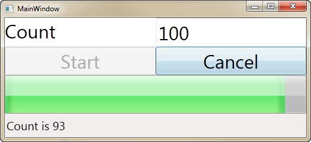
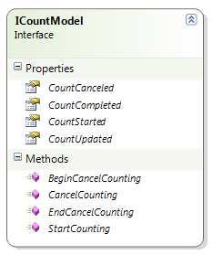

Windows Workflow Foundation (WF4) - How to use Workflow from WPF
How to use Workflow from WPF MVVM
In this sample I'll show you what I learned about using WPF and WF together. I started by listing the requirements for the client application
- Follows MVVM architecture
- Runs workflows on background thread in the client process
- Supports notification of events from Workflow with a Progress Bar
- Supports control of workflow from UI (Cancel)
- High test coverage
- Implemented in TDD style (Test First - Red / Green / Refactor)
Challenges
There are several challenges I needed to overcome to implement this solution.
- How to use a Workflow in a WPF app built with MVVM architecture
- How to support notifications from a workflow without messaging activities
- How to control a workflow from the client app in MVVM
And what does this application do? It counts numbers. Yes, pointless I know but the example is just there to demonstrate a process (any process) controlled by a workflow from a WPF application.

How to use a Workflow in a WPF app built with MVVM architecture
Workflows can run in any managed process. Many times they run as a service using IIS and Windows Server AppFabric. In this sample I want to run the workflow in the same process as the WPF app.
In the MVVM architecture the logical place to do this is in the model. When I started building the application, I started with the model writing the test first and then implementing the model. Doing this helped me to get very high test coverage (nearly 90%) on the model.
What is the purpose of the model?
The job of the model in MVVM is to represent the data and the processes that are exposed to the UI. The model knows nothing about the UI that it will be consumed by. This separation allows me to focus on creating an object that encapsulates the necessary business logic and data access code in a highly testable fashion.
To start with I created the ICountModel interface to describe the capabilities I wanted in the model

Rather than use events, I created properties of Action<T> that allow the tests or View Model to receive notifications from the model about events in the workflow lifecycle. The ICountModel interface is implemented by the internal CountModel class. I made this class internal because I want the View Model to use ICountModel and not the CountModel class.
How to support notifications from a workflow without messaging activities
Workflows can communicate with other apps and workflows using messaging activities. In my case I would be running the workflow within the host application's AppDomain so this allows me to take advantage of extensions.
The WorkflowApplication.Extensions property contains a collection of Extensions which are simply objects (or functions that create objects) that you stuff in there. This is how we will pass the model to the activities that will notify the host about events in the workflow.
The workflow accepts two arguments
|
Name |
Type |
Description |
|
CountTo |
Int32 |
The number you want to count to |
|
CountDelay |
Int32 |
The number of milliseconds you want to delay after eachcount |

As you can see in the workflow I've created a number of custom activities that do notifications when the count starts, completes, cancels and updates. To handle the case where the workflow is canceled I use a CancellationScope activity which allows me to specify a CancellationHandler for the notification.
The notification activities are surprisingly simple
public sealed class NotifyCountStarted : NativeActivity
{
protected override void CacheMetadata(NativeActivityMetadata metadata)
{
metadata.RequireExtension<ICountModel>();
}
protected override void Execute(NativeActivityContext context)
{
var countModel = context.GetExtension<ICountModel>();
if (countModel.CountStarted != null)
{
countModel.CountStarted();
}
}
}
public sealed class NotifyCountStarted : NativeActivity { protected override void CacheMetadata(NativeActivityMetadata metadata) { metadata.RequireExtension<ICountModel>(); } protected override void Execute(NativeActivityContext context) { var countModel = context.GetExtension<ICountModel>(); if (countModel.CountStarted != null) { countModel.CountStarted(); } } }
Starting the Workflow
When I want to invoke the workflow I have to add the extension before running the workflow. In this case, the model is the extension so I simply add "this".
public void StartCounting(int count = 100, int delay = 50)
{
this.countTo = count;
this.countDelay = delay;
this.workflow = new WorkflowApplication(
new WorkflowCount
{
CountTo = this.countTo,
CountDelay = this.countDelay
}) { Aborted = this.OnAborted };
this.workflow.Extensions.Add(this);
if (this.extension != null)
{
this.workflow.Extensions.Add(this.extension);
}
this.workflow.Run();
}
public void StartCounting(int count = 100, int delay = 50) { this.countTo = count; this.countDelay = delay; this.workflow = new WorkflowApplication( new WorkflowCount { CountTo = this.countTo, CountDelay = this.countDelay }) { Aborted = this.OnAborted }; this.workflow.Extensions.Add(this); if (this.extension != null) { this.workflow.Extensions.Add(this.extension); } this.workflow.Run(); }
Canceling the Workflow
To cancel the workflow there are two cases. In one case we want to cancel the workflow synchronously as in the case where the user clicked the button to cancel.
public void CancelCounting()
{
workflow.Cancel();
}
public void CancelCounting() { workflow.Cancel(); }
Even though the model doesn't need this capability, the ViewModel will need to handle the closing/close events and it doesn't have access to the workflow so the model will need to expose these methods.
public IAsyncResult BeginCancelCounting(
AsyncCallback callback, object state)
{
return this.workflow != null
? this.workflow.BeginCancel(callback, state)
: null;
}
public void EndCancelCounting(IAsyncResult result)
{
if (workflow != null && result != null)
workflow.EndCancel(result);
}
public IAsyncResult BeginCancelCounting( AsyncCallback callback, object state) { return this.workflow != null ? this.workflow.BeginCancel(callback, state) : null; } public void EndCancelCounting(IAsyncResult result) { if (workflow != null && result != null) workflow.EndCancel(result); }
Testing the Notification Activities
There are the following aspects to the notification activities that I want to test.
- Do they respond appropriately if the extension is not present (throwing an exception)?
- Do they raise the notification if the extension is present and the delegate is supplied?
- Do they fail if the extension is present but no delegate is supplied?
For each of the Notification Activities I have tests that verify the behavior.
Verifying that the activity throws an exception if the extension is not found
[TestMethod]
[ExpectedException(typeof(ValidationException))]
public void NotifyStartedShouldThrowOnNoExtension()
{
WorkflowInvoker.Invoke(new NotifyCountStarted());
}
[TestMethod] [ExpectedException(typeof(ValidationException))] public void NotifyStartedShouldThrowOnNoExtension() { WorkflowInvoker.Invoke(new NotifyCountStarted()); }
Verifiying that the activity raises the notification if the extension is present and the delegate is supplied
[TestMethod]
public void NotifyUpdatedShouldNotify()
{
var model = CountModelFactory.CreateModel();
var updateNotified = false;
var actual = 0;
const int expected = 32;
// The delegate will be invoked with the count
model.CountUpdated = i =>
{
updateNotified = true;
actual = i;
};
var invoker = new WorkflowInvoker(
new NotifyCountUpdated
{
CurrentCount = expected
});
invoker.Extensions.Add(model);
invoker.Invoke();
Assert.IsTrue(updateNotified);
Assert.AreEqual(expected, actual);
}
[TestMethod] public void NotifyUpdatedShouldNotify() { var model = CountModelFactory.CreateModel(); var updateNotified = false; var actual = 0; const int expected = 32; // The delegate will be invoked with the count model.CountUpdated = i => { updateNotified = true; actual = i; }; var invoker = new WorkflowInvoker( new NotifyCountUpdated { CurrentCount = expected }); invoker.Extensions.Add(model); invoker.Invoke(); Assert.IsTrue(updateNotified); Assert.AreEqual(expected, actual); }
Verifying that the activity does not fail if the extension is present but no delegate is supplied
[TestMethod]
public void NotifyUpdatedWithNoDelegateShouldDoNothing()
{
ICountModel model = CountModelFactory.CreateModel();
WorkflowInvoker invoker = new WorkflowInvoker(new NotifyCountUpdated());
invoker.Extensions.Add(model);
invoker.Invoke();
// No exception is success
}
[TestMethod] public void NotifyUpdatedWithNoDelegateShouldDoNothing() { ICountModel model = CountModelFactory.CreateModel(); WorkflowInvoker invoker = new WorkflowInvoker(new NotifyCountUpdated()); invoker.Extensions.Add(model); invoker.Invoke(); // No exception is success }
Testing the Model
When testing the model I have to take into account the WorkflowApplication will run the workflow on a different thread. That means I will need to use synchronization objects to cause the test thread to wait. Creating the tests while I was developing the class forced me to deal with this reality the Action delegates really helped here.
[TestMethod]
public void ShouldRaiseCompleteEvent()
{
var tracking = new MemoryTrackingParticipant();
var target = CountModelFactory.CreateModel(tracking);
var countCompleted = new AutoResetEvent(false);
target.CountCompleted = () => countCompleted.Set();
try
{
target.StartCounting(1);
Assert.IsTrue(countCompleted.WaitOne(TestTimeout));
}
finally
{
tracking.Trace();
}
}
[TestMethod] publicvoid ShouldRaiseCompleteEvent() { var tracking = new MemoryTrackingParticipant(); var target = CountModelFactory.CreateModel(tracking); var countCompleted = new AutoResetEvent(false); target.CountCompleted = () => countCompleted.Set(); try { target.StartCounting(1); Assert.IsTrue(countCompleted.WaitOne(TestTimeout)); } finally { tracking.Trace(); } }
Implementing the ViewModel

Binding to the commands causes the buttons on the form to be enabled and disabled as the commands are enabled and disabled. When you bind to data, updates are provided through the PropertyChanged event. However, when you update the state of a command you need to use CommandManager.InvalidateRequerySuggested. I found that when I invoked this method on a callback from the workflow the command state was not updated. To solve this problem I created a method to dispatch the call to the UI thread.
private static void RequeryCommands()
{
// May be called at shutdown
if (Application.Current != null)
{
Application.Current.Dispatcher.Invoke(
(Action)(() => CommandManager.InvalidateRequerySuggested()));
}
}
private static void RequeryCommands() { // May be called at shutdown if (Application.Current != null) { Application.Current.Dispatcher.Invoke( (Action)(() => CommandManager.InvalidateRequerySuggested())); } }
Binding to the ViewModel
DataBinding in XAML can be tricky at first but here is how I did it. In the MainWindow constructor I create the view model, set the DataContext to the view model and setup event handlers to solve the window closing problem.
public MainWindow()
{
this.InitializeComponent();
this.viewModel = new CounterViewModel();
this.Closing += this.viewModel.ViewClosing;
this.Closed += this.viewModel.ViewClosed;
this.DataContext = this.viewModel;
}
public MainWindow() { this.InitializeComponent(); this.viewModel = new CounterViewModel(); this.Closing += this.viewModel.ViewClosing; this.Closed += this.viewModel.ViewClosed; this.DataContext = this.viewModel; }
Here is how I did the databinding for the progress bar.
<ProgressBar
x:Name="progressBar"
Grid.Column="0"
Grid.Row="2"
Grid.ColumnSpan="2"
Value="{Binding Path=CurrentCount, Mode=OneWay}"
Maximum="{Binding Path=CountTo, Mode=OneWay}"
/>
<ProgressBar x:Name="progressBar" Grid.Column="0" Grid.Row="2" Grid.ColumnSpan="2" Value="{Binding Path=CurrentCount, Mode=OneWay}" Maximum="{Binding Path=CountTo, Mode=OneWay}" />
<Button
FontSize="32"
Grid.Row="1"
Grid.Column="0"
Command="{Binding Path=StartCommand}"
>Start</Button>
<Button FontSize="32" Grid.Row="1" Grid.Column="0" Command="{Binding Path=StartCommand}" >Start</Button>
Testing the ViewModel
Initially the ViewModel didn't include delegates that surface the notification events from the model because I didn't write the tests first and instead created the UI. In retrospect I should have created the tests at the same time as I created the View Model. I would have realized that it was impossible to test the View Model without the events because the test code has to know about the events in the workflow.
For example, here is a test where I want to verify the state of the StartCommand
/// <summary>
/// Verifies that the StartCounting command is enabled/disabled as expected
///</summary>
[TestMethod()]
public void CanStartCountingTest()
{
CounterViewModel target = new CounterViewModel();
AutoResetEvent countStarted = new AutoResetEvent(false);
AutoResetEvent countCompleted = new AutoResetEvent(false);
target.CountStarted += () => countStarted.Set();
target.CountCompleted += () => countCompleted.Set();
Assert.IsTrue(target.CanStartCounting(), "Start command is not enabled");
target.CountTo = 5;
target.StartCounting();
Assert.IsTrue(countStarted.WaitOne(1000));
Assert.IsFalse(target.CanStartCounting(), "Start command is not disabled");
Assert.IsTrue(countCompleted.WaitOne(1000));
Assert.IsTrue(target.CanStartCounting(), "Start command is not enabled");
}
/// <summary> /// Verifies that the StartCounting command is enabled/disabled as expected ///</summary> [TestMethod()] public void CanStartCountingTest() { CounterViewModel target = new CounterViewModel(); AutoResetEvent countStarted = new AutoResetEvent(false); AutoResetEvent countCompleted = new AutoResetEvent(false); target.CountStarted += () => countStarted.Set(); target.CountCompleted += () => countCompleted.Set(); Assert.IsTrue(target.CanStartCounting(), "Start command is not enabled"); target.CountTo = 5; target.StartCounting(); Assert.IsTrue(countStarted.WaitOne(1000)); Assert.IsFalse(target.CanStartCounting(), "Start command is not disabled"); Assert.IsTrue(countCompleted.WaitOne(1000)); Assert.IsTrue(target.CanStartCounting(), "Start command is not enabled"); }
Summary
This sample application demonstrates that it is possible to build a WPF app using the MVVM pattern that interacts with a workflow. Using a Workflow to do processing makes your app more responsive because the workflow is running on a different thread. Also, though this app does not show it, you could run many workflows all at the same time by interacting with a collection of them rather than a single one like this application does.